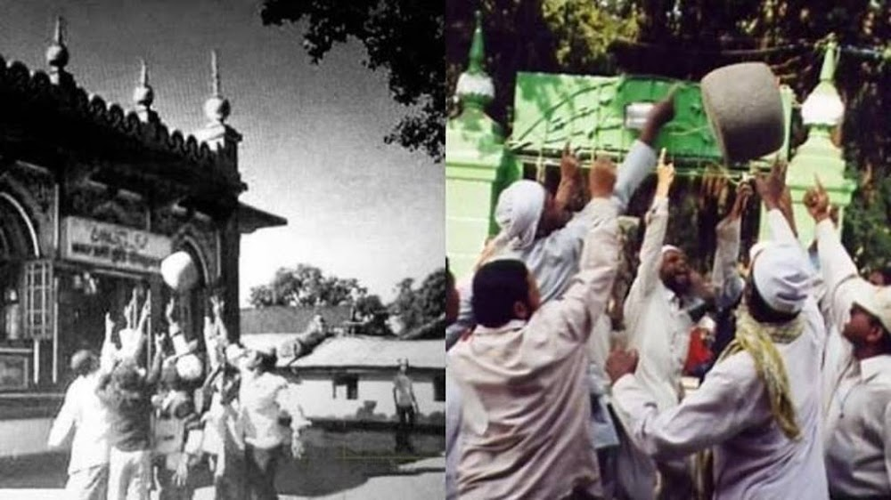

India has always been a land of mysteries dating back to centuries ago. Mysteries that lead to question marks in capital letters in our minds. Mysteries that are difficult to explain. There are events, phenomena, and happenings that occur that probably have no explanations whatsoever.
Twins village
This village is called the ‘Village of Twins’ due to the strikingly large number of twin births in the village. Not only that, whoever leaves this village and go to another place and gives birth they also end up having twins. This village currently claims to be having 200 pairs of twins.Scientists say the strange reason for this is the chemicals in the water in this area.
The Floating Pillar
This temple is a well known archeological and historical site dedicated to Lord Shiva. A strange thing about this place is that one out of the 70 pillars this temple is built on hangs in the air. This pillar is standing without any support.According to people, they believe amongst the many tricks temple builders of that age knew, this was one of them.
The Lifting Stone

A 70 kg heavy stone at this shrine has NO other way to lift whatsoever, except if 11 people in total gather around this rock, point their forefingers at it and name the saint who put a curse on the stone and that is when it levitates automatically. No matter what you do, there is no other way to levitate that rock except this one. It is believed that a Sufi Saint called Qamar Ali cursed on this stone being used for bodybuilding about 800 years ago.
Door-Less Houses
No building, or place of residence, houses, shops or for that matter, even schools haven't any kind of doors on them and neither a door frame. More than that, not a single crime has been reported in this village ever.People of Ahmednagar, (which is famous for it’s Shani Temple) hold a strong belief in the powers of Lord Shani and believe that this is all his doing.
Snow Skeletons
Around 300-600 skeletons can be seen beneath the surface of the frozen Roopkund lake every year when the ice melts at this mysterious place in India. Radiocarbon tests and forensics date the corpses back to the 15th century AD. The locals believe that the corpses belong to the then king and queen of Kanauj, who was going on a pilgrimage but plunged into the lake due to a severe hailstorm and died.
Magnetic Hill
At the magnitude of 11,000 feet above sea level, it seems like the cars are pulled up at their own accord. It is believed you can drive here even with the car ignitions off and the hills will be pulling cars towards themselves. It is a small stretch of road located about 30 km from Leh towards Kargil and known as Magnetic Hill of Ladakh.
Red Rain
The legend of red rain in Idukki Kerela mystified people. Also known as blood rain, it baffled people back in 2001. Such events are even unexplained through scientific reasons and render them so mysterious that they are marked in our minds forever. Apart from the fact that it was the usual monsoon time, this part of Kerela experienced rain in blood red color. It was also a very localized phenomenon occurring only over a stretch of a few km.
Suicidal Birds
Every monsoon, this place experiences a very bizarre & sad phenomenon. Over the last 100 years, thousands of birds have flown to their death over a small strip of land in Jatinga, India. Between September and November year after year, several migratory and local birds commit mass suicide at the village. Between 7 and 10 pm, hundreds of birds descend from the sky, plummeting to their deaths by crashing into buildings and trees. The phenomenon has captured the interest of wildlife circles and tourists, making the village of Jatinga world famous. What is most mind-boggling is that most of these bird species are diurnal and there’s no explanation why they would be flying at night.
Visa God
We all know how tough is it to get a U.S. Visa. Lord Venkateswara is the deity here who is known as visa granting Balaji. It is one of the ancient temples near the banks of Osman Sagar lake. This temple is about 45 min drive from Hyderabad. Since few years this place has become one of the top pilgrimage destinations for truly aspiring US-visa candidates. The mysterious fact about this temple is that they do end up getting one. We don’t know if it is the law of attraction or actual Lord Venkateswara’s blessing, but this temple is already known as the temple of the youth.
Ghost Lights
There have been many sightings of unnatural glowing lights of different colors hovering over the marshes in West Bengal. Referred to as ‘Aleya Lights’ for many years now, these lights are a nightmare for fishermen, as they usually end up confusing them and they would lose their way. In many cases reported till date, various fishermen have even lost their lives due to these strange lights. These marshes are some of the most mysterious places in India owing to this unexplained phenomenon. The Aleya Ghost Lights are officially a global phenomenon.
Holy Rats
The Karni Mata Temple is infested with 20000 rats. People come from all over the world to worship these rodents. It is also known as the temple of rats because it is overrun by animals who run scurry through its stone walls. The rats are seeing moving freely around the temple sipping milk from large metal bowls.
Gravity Defiance
A hall that goes by the name of Bara Imambara in Lucknow is one of the most mysterious places of India. It is an important place of worship for the Muslims who come here every year to celebrate the religious festival of Muharram. The bhool bhulaiyan here has intrigued travelers and architects for over 200 years. The history of the Bhool Bhulaiya is closely linked to the Bada Imambada. In the late 18th century Avadh was reeling under severe drought and to provide employment to his people, Nawab Asaf-Ud-Dowhala decided to build the Bada Imambada. The monument also stands tall at 50 meters in length but with no pillars or beams supporting it.
Least Accessed Place In India
This territory is an area of dispute between China & India. Regardless of that face, it is also the least accessed area of India. There have been weird spottings of UFO and strange figures of humanoids. The locals in this area believe that it belongs to the aliens. There have been more than 5 sightings of weird undetectable objects here.
Bullet Baba
This temple is known as the Bullet Baba’s temple and is dedicated to a person, Om Banna, who died in an accident 20 years ago while driving his ‘bullet’. According to the people who come here to worship the odd god, when Om’s bike was taken to the local police station after the accident, it kept disappearing from the police station only to be found at another site each time. The news about this miracle spread like wildfire and the bike is now the idol in the temple.
The Immortal Flame
“Jawala Ji” is the name of Hindu Goddess in Hinduism. She is said to reside as an eternal flame since time infinity near a place called Kangra in Lower Himalayas, India. The mystical and astonishing fact about this flame is that it is burning since time immemorial.
The Abandoned Village
This town is abandoned and cursed (even the vegetation is limited). Once upon a time, it used to be home to Paliwal Brahmins. Kuldhara stands desolate and an uncanny silence prevails all around since 200 years.All we know about this village is that all its inhabitants left the village to settle somewhere else and cursed the place so that no one would ever be able to settle down there. About 200 years ago, Salim Singh, the Diwan of Jaisalmer, known for his debauchery and unscrupulous tax-collecting methods, set his eyes on the beautiful daughter of the village chief. The Diwan was absolutely hell-bent on having the girl and he told the villagers if they came in his way he would levy huge taxes on them. Fearing the wrath of the Diwan, the residents of the entire village fled one dark night, leaving behind their homes and everything within them.
The Spooky Beach
People roaming around the beach hear whispers and voices from behind, but they obviously find no one around that could make the noises. The mystery is that there are a lot of people who disappeared on this beach.The beach was previously a burial ground for Hindus, and thus it is full of spirits of the dead! Maybe it’s the theory that makes it one of the mysterious and haunted places in India.
Friendly – Cobras
The spookiest part about this place is that every household in this village is obligated to keep a resting place for cobras. The creepiest part, NO snake bite has EVER been reported in this village. Snake worship is practiced here religiously. Turns out, the snakes are really friendly here.
The Jodhpur Boom
//edit from heres
On December 18, 2012, a sudden, deafening boom startled the people of Jodhpur. It seemed to come out of nowhere, crashing in the sky like the sonic boom caused by an airplane breaking the speed of sound. However, it was more aggressive in nature, sounding a lot like a massive explosion. The citizens were concerned about the sound and asked around about it, but it soon turned out that no planes had been flying over the area and no explosions had taken place. The source of the “Jodhpur boom” was a complete mystery.The weirdest part is that it appears that the entire month was littered with strange, unexplained booms all over the world, from United Kingdom to Texas. These bangs were witnessed over the course of several weeks and sometimes they were accompanied with strange green light. In one of the locations, a geologist even stated that the booms and subsequent tremors were unlike anything he had ever encountered and didn’t fit the official explanation that the Air Force were testing a new plane.
The Nine Unknown Men
The Nine Unknown Men are to India what the Illuminati is to the Western world, but even more pervasive and mysterious. According to legend, this powerful secret society was founded by Emperor Asoka in 273 BC after a bloody battle that took the lives of 100,000 men. The function of the Nine Unknown Men was to preserve and develop the sort of secret information that would be too dangerous in the hands of the uninitiated.The number of the Unknown Men is always nine, and their undisguised contacts with the outside world are few and far between.
The Immortal Beings Of The Himalayas
In many mythologies, mountains are natural homes to divine and immortal beings. As such, it’s no surprise that the world’s mightiest mountain range, the Himalayas, is subject to whisperings of mysterious beings hidden away in the valleys of the mountains.One popular legend among the practitioners of various New Age soul-searching methods is Gyanganj. It is said to be an ancient Indian and Tibetan tale of a city-kingdom of mysterious immortal beings that are hiding from the world, but influencing it in various subtle ways when needed. It is said that Gyanganj is cunningly camouflaged or even existing in a completely different plane of reality, which is why it has managed to avoid being discovered by modern mapping techniques and satellites.
The Bhootbilli
The Bhootbilli, or “ghost cat,” is a mysterious monster that is terrorizing certain parts of India, particularly in the area of Pune. A strange cryptid that appears to be a cross between a cat, a dog, and a mongoose, it is responsible for killing livestock and frightening the locals. According to one eyewitness, the creature is ”fat and broad with a long tail, black in colour, has a face like a dog and back like a mongoose.” It is capable of long jumps, having at least once jumped in a tree to escape people who have tried to catch it. Despite this, it’s said to be quite large and ferocious—its size is described as ”smaller than a lion but bigger than a hyena.”
Shanti Dev
Shanti Devi was born in a happy Delhi family in 1930s. However, she didn’t stay happy for long. When she was four years old, she started insisting that her mother and father were not her true parents. She claimed that her name was actually Ludgi and her true family lived in a completely different city. She claimed she had died giving birth to a child and gave very specific information on her husband and family life.Shanti’s worried parents set out to find if there was any meaning behind their daughter’s outlandish claims, and what they found out was truly unnerving. A young woman named Ludgi Devi had indeed died in childbirth at the time and in the town Shanti had specified, and the family and relatives she had described very much existed. When she eventually met her “husband from previous life,” she recognized him instantly and acted like a mother towards his child.
Dining with the dead - New Lucky Restaurant
Quite an attraction in Ahmedabad, New Lucky Restaurant lies nonchalantly around an old Sufi Saint’s cemetery. The restaurant owner, Krishna Kutti, believes that the cemetery has bought him luck. Valar Morghulis to that!
Dog Temple
There’s no doubt that dog is a man’s best friend, and while Hachiko Statue in Japan is quite famous, India has its own version of it. A shrine in the name of a Dog-God is erected and it is worshipped honouring its faithfulness. As weird as weird may get, but it is also believed that the Dog-God works in allies with the village deity.
500-year-old mummy of Sangha Tenzin
In a quaint little village of Spiti, lies an inexplicable mystery. A 500-year-old mummy with its skin, hair and teeth intact was discovered. This well-preserved mummy is believed to be of a Buddhist monk who probably started mummifying himself while he was alive.
The Haunted Bhangarh Fort
The abandoned fort of Bhangarh, located in Rajasthan is one of the most haunted places on Earth and the top haunted place in India, so much so that the Archaeological Survey of India has put up a sign outside the fort, prohibiting people to enter it after sunset. Locals living in the surrounding area had to move their entire town outside the limits of the fort because of the alleged hauntings. Legend has it that the city of Bhangarh was cursed by a holy man named Baba Balnath. He had given permission for the town’s construction so long as the heights of the building do not cast a shadow over his home. It is said that a young Prince happened to do just that and that led Baba Balnath to curse the entire city. Many believe he is still buried there till date.
Krishna’s Butterball
Krishna’s Butterball, located in Mahabalipuram, Tamil Nadu, is well known for its stone carvings. The Butterball is a huge rock around 5 meters in diameter, carefully lying on a smooth slope. But here is the interesting part: Apparently, the slope is way too slippery. So much so that local children use it as a natural slide. Yet, somehow, this giant rock doesn’t move which is in fact defies all laws of Physics. The rock is a popular tourist attraction and many tourists can be seen posing for pictures seeming to hold the rock from the other end! What makes the rock stand stiff and prevent from slipping in what seems to be a slip pit, is a mystery.
The Drowning Church
Built by French missionaries in the 1860’s, the Rosary Church, as it was called back then, was a centre of all community activities. The building not only included a church and an orphanage, but also a hospital.
However, exactly 100 years later, the Indian Government built the Gorur Dam, which now floods the Hemavathi Reservoir. The damage – villages upstream had to be relocated. The villagers obliged and Rosary Church was left to fight it out with the water. Since then, Rosary Church submerges every year during the monsoons and resurfaces as the water levels recede. Battling the regular tests, Rosary Church now has a mysterious charm to it and a new name – The Drowning Church.
The Musical Pillars
Originally built in the 15th century, the Vittala Temple is one of the most extravagant pieces of architecture in Hampi. However, what sets it apart from some other equally glorified temples around the country is a collection of 56 musical pillars, which produce musical sounds when tapped gently. During their rule, the British were so intrigued by the pillars’ music producing ability that they cut two pillars into half to check if anything was inside the seemingly hollow pillars of granite. If you are interested, you can still check these two pillars inside the temple complex.
Over the years, curious visitors damaged several other musical pillars by regularly tapping them. To protect any further damage to this heritage site, tapping on musical pillars is now forbidden.
Delhi cant
Most of the times, people see a lady standing in a white dress asking for a lift. if you go through she will run as fast as the car runs & people reported her sitting there